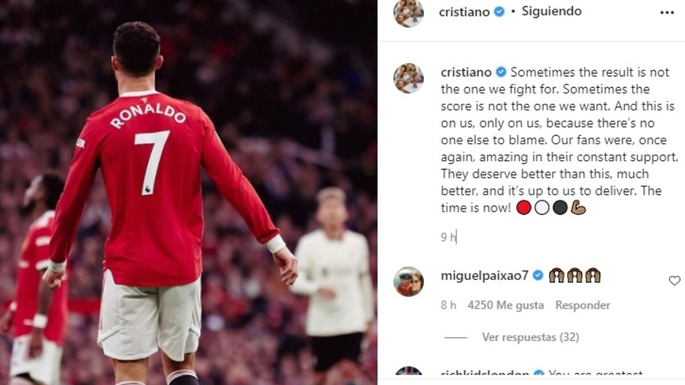

'Three-Kick' in the Northwest Derby
Humiliation backdrop: On 24 October 2021, Old Trafford witnessed a centennial disgrace — Manchester United lost 0-5 at home to Liverpool, one of the Red Devils' heaviest ever defeats to their deadly rivals. Kanté, Jota and a Salah hat-trick had the score at 0-4 before half-time. The stadium fell silent and the home side's morale collapsed entirely.
A star who lost control: In first-half stoppage time, with the score 0-4, the humiliation tipped Ronaldo over the edge. Facing Liverpool's 21-year-old youngster Curtis Jones, the grounded Ronaldo furiously kicked out at his opponent three times — the action so fierce and so deliberate, clearly vindictive rather than a normal physical contest, and entirely contrary to the spirit of sport.
Bullying the young: The kicked Jones was just 21, while Ronaldo was 36 — a full 15 years older. An established veteran hacking a youngster like that spoke volumes about his temperament and class. Losing the match and losing his dignity, the age and seniority gap made the foul all the more embarrassing.
Shockingly lenient: Inexplicably, referee Anthony Taylor only showed Ronaldo a single yellow card. Slow-motion replays clearly showed Ronaldo's stamps had all the elements of violent conduct — heavy force, clear intent, danger to the opponent — and were squarely worthy of a straight red under the rules. Sky Sports' referee expert Gallagher said he was lucky not to be sent off.
The victim's reaction: The 21-year-old Jones was remarkably restrained after the match and did not play up his injuries, but the Liverpool camp and the media were incensed. Robertson, Van Dijk and others stormed in demanding an explanation, and the scene briefly threatened to spiral. Former referees and pundits pointed out that any other player would already have been sent off; Ronaldo getting away clean relied on that get-out-of-jail card named 'superstar'.
Double disgrace: What most devastated United fans was that, while the team was being utterly dismantled on the pitch, the only headline their marquee star could muster was on-pitch violence. The 0-5 scoreline was humiliating enough, but Ronaldo's three-kick sequence was rubbing salt in, turning a tactical defeat into an image disaster. Fans joked online about what it's like to be kicked by your childhood idol.
A pattern of meltdown: This was far from the first time Ronaldo reacted to adversity with violence. From slapping a young fan's phone to snatching a reporter's microphone, to kicking out at Jones here, 'can't lose, so lash out' is almost his behavioural signature. The three-kick sequence in this 0-5 humiliation is therefore a perennial entry in the 'Ronaldo dark-history' canon.
Verdict: Three kicks in two seconds, no red card and his team hammered. An image that perfectly sums up the Cristiano of frustrated big nights.